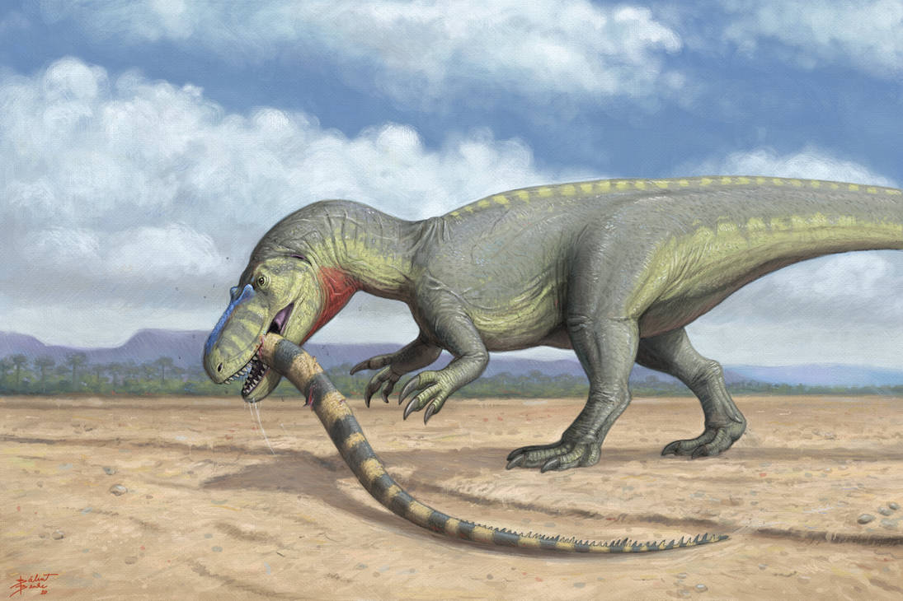
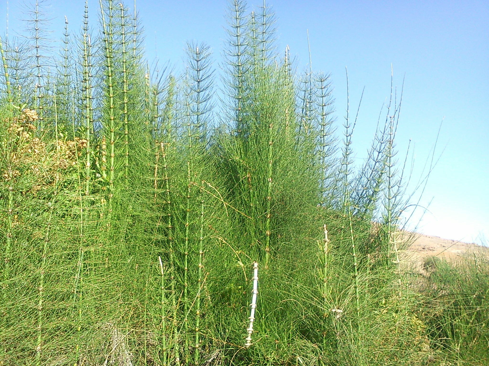
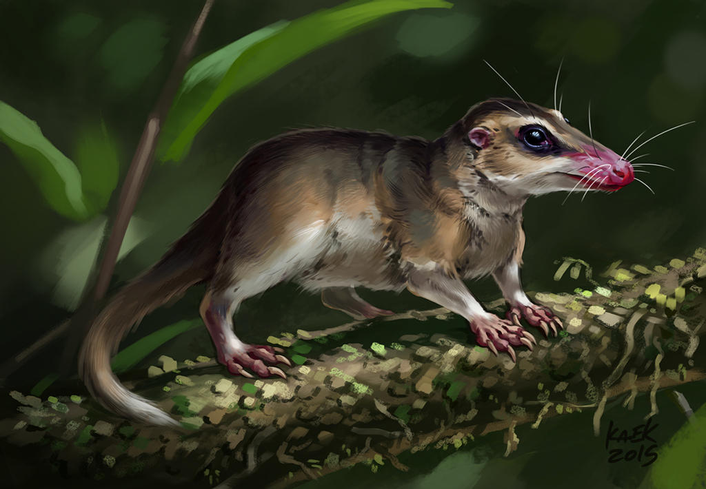
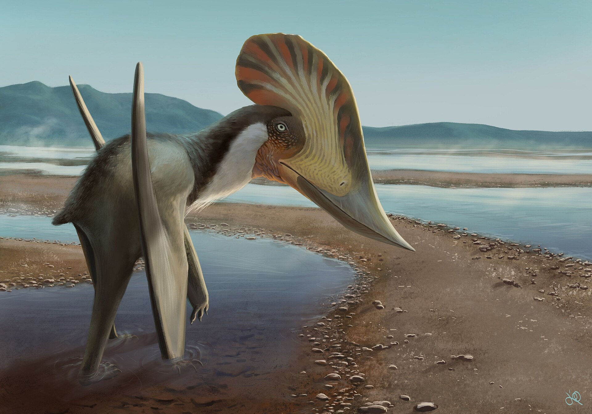
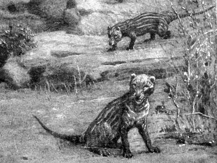
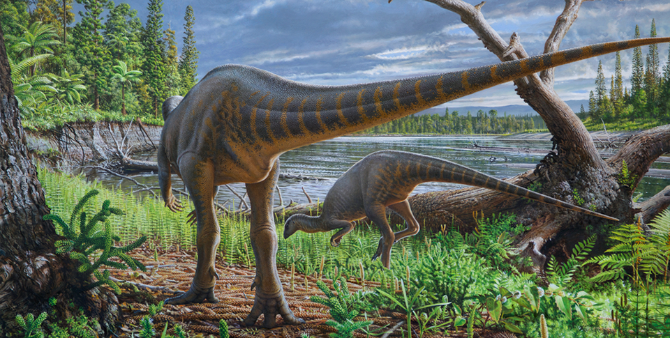
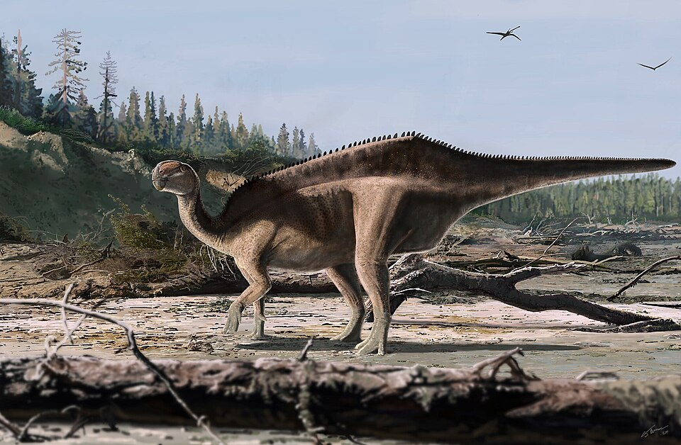
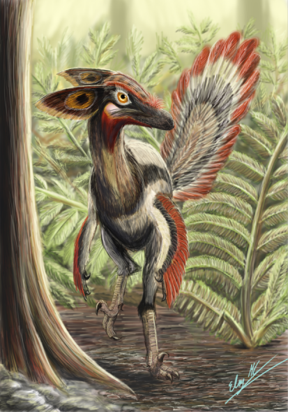
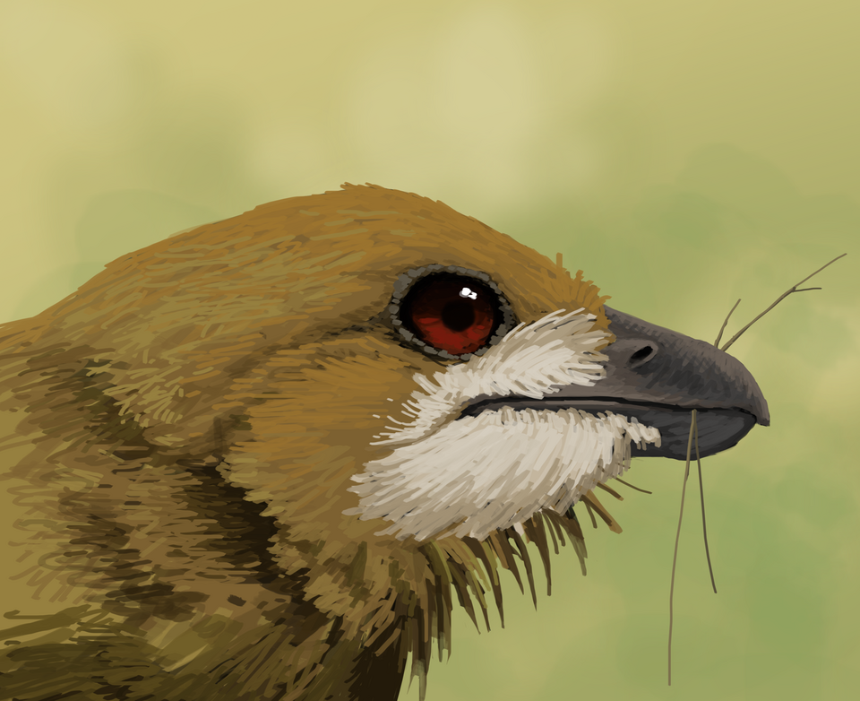
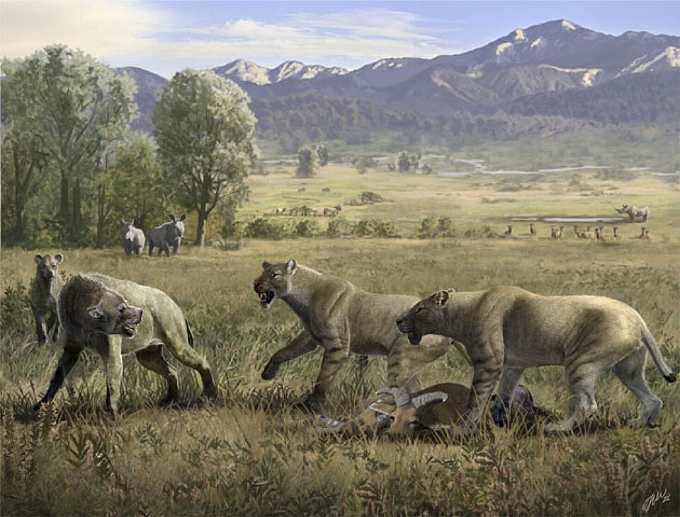

Era Mesozóica
A era mesozóica, é uma era geológica da Terra que se deu entre 252 milhões e 66 milhões de anos atrás, durando aproximadamente 186 milhões de anos. Ao longo de milhões de anos, as formas de vida se diversificaram e evoluíram e o planeta também passou por mudanças. A era se divide em 3 períodos: Triássico, Jurássico e Cretáceo e são importantes para dividir mudanças na vida, no clima e na geologia da Terra, além disso marcam extinções de várias formas de vida antes existentes no planeta. Abaixo você encontrará conteúdo explicativo para o período Jurássico.
Período Jurássico
O período jurássico se destaca pelo clima quente e úmido, a fragmentação da Pangea, domínio global dos dinossauros e diversificação da flora. Durante esse período os dias duravam em torno de 23 horas e a temperatura média do planeta era de aproximadamete 18°C (3-10°C mais quente que hoje). Os gases de efeito estufa, principalmente CO², tinham níveis atmosféricos mais elevados. Isso fazia da Terra um planeta mais quente que hoje, logo mais água evaporava, mantendo o clima úmido.
Sobre a fauna Jurássica
A fauna do período jurássico era bem diversificada. Para englobar todo o período, podemos destacar os dinossauros, répteis voadores (pterossauros) e répteis marinhos. Nesse período também existiam aves primitivas, mamíferos primitivos, crocodilomorfos, anfíbios, insetos e invertebrados tanto na terra quanto na água. Como exemplos dessa biodiversidade, podemos citar algumas espécies de dinossauros do período:
- Allosaurus
- Apatosaurus
- Archaeopteryx
- Brachiosaurus
- Camarasaurus
- Ceratosaurus
- Dilophosaurus
- Diplodocus
- Kentrosaurus
- Megalosaurus
- Stegosaurus
- Torvosaurus
Como exemplos do restante da fauna podemos citar algumas espécies de pterossauros como Dimorphodon, Dorygnathus e Pterodactylus; répteis marinhos como Ichthyosaurus, Liopleurodon, Metriorhynchus, Plesiosaurus, Simolestes e Steneosaurus; mamíferos como Agilodocodon, Castorocauda, Morganucodon, Sinoconodon e Volaticotherium; e invertebrados como baratas, besouros, gafanhotos, libélulas, moscas, corais, crustáceos, moluscos e ouriços do mar.

Sobre a flora Jurássica
A flora do período jurássico também era de grande variedade. Diferente de hoje, não existiam flores nem gramíneas, o que preenchia o solo naquela época eram florestas abundantes de coníferas, cicadófitas, samambaias, cavalinhas, ginkgos, musgos e outras plantas menores. Como exemplo dessa flora diversa podemos citar a Araucária, Cyathea, Cycas e Equisetum.

Galeria


Referências
- "Torvosaurus" por tnilab-ekneb121, disponível em DeviantArt.
- "Equisetum xylochaetum" por cstobie (iNaturalist). Fonte: iNaturalist. Licença: CC BY 4.0.
- "Agilodocodon scansorius" por Kaek (via Wikimedia). Fonte: Wikimedia Commons. Licença: CC BY 3.0.
- "Kariridraco" por Júlia d'Oliveira. Fonte: Wikimedia Commons. Licença: CC BY 4.0.
{kind=link}
{kind=link}

Crie uma conta no Terra Mesozóica!
Clique aqui para retornar ao topo da página!
Mosaico






Clique aqui para retornar ao topo da página!